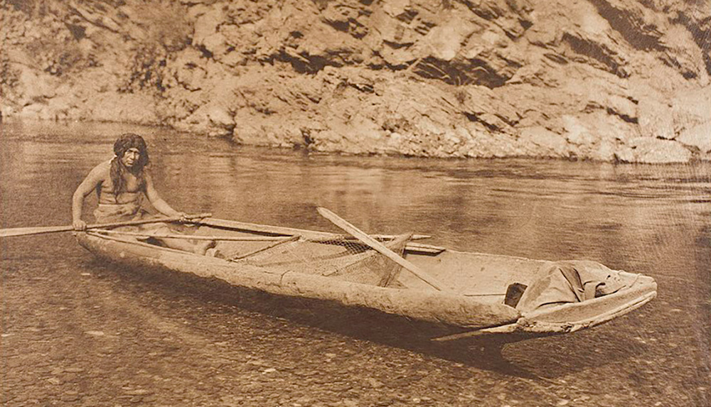

RiverRush Expeditions began as a small local operation, inspired by the founders’ deep love for the river and the great outdoors. Starting with just a few boats and a handful of guides, we were driven by a passion to share thrilling rafting adventures with the community.

Over time, our commitment to safety, excellence, and unforgettable experiences helped us grow into a recognized adventure company. Today, we offer a wide range of rafting trips suitable for all ages and skill levels, always respecting nature and prioritizing our guests' enjoyment.